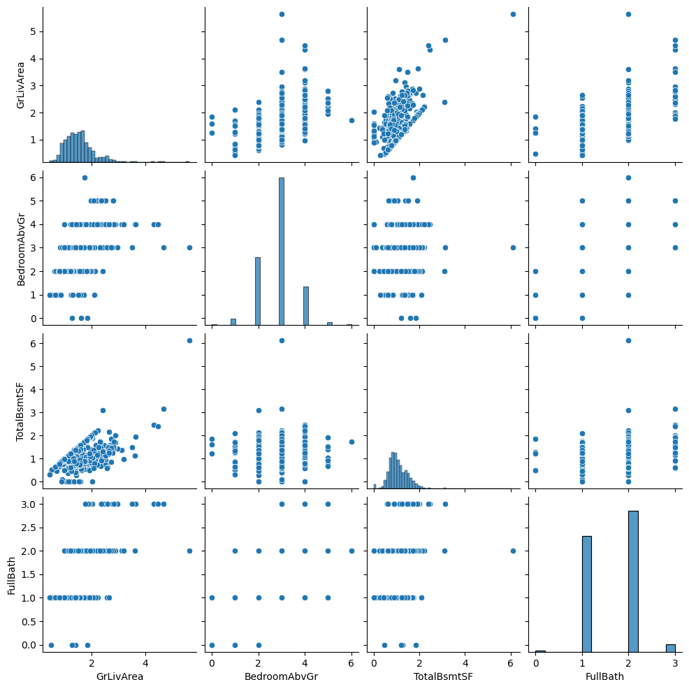
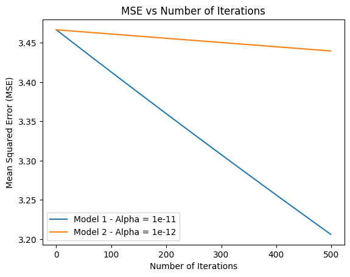

NOTE: Most of the code is not provided due to potential plagerism concerns

For my final data structures and algorithms class project, I had to create an ML model that predicted house prices without utlizing ML-specific libraries to help solve the problem.
The model was based on assigning weighting to various categories (square footage, number of bathrooms, etc.)
I learned how to increase the efficiency of my model by steadily reducing mean square error and recalculating the weightings of specific categories.
I implemented Python3 libraries, including pandas, numpy, matplotlib, and seaborn, to visualize the data and create graphs of how the model improved based on the number of iterations.
To accomplish this task, I used linear regression and gradient descent. The data was provided to me in two .csv files, one for training and the other for testing.
The output of the model was dependent on gradient (the change of the all model weights compared to change in error) and the loss (difference between observed and predicted value).
An example of a poor performing output is pictured on the right.
My Training Model:
def train(self, weights, learning_rate, iterations):
iterList = [] # stores number of itterations
mseList = [] # stores mse value history
for i in range(iterations):
predicted_prices = self.pred(weights)
mse = self.loss(predicted_prices, self.price)
gradient = self.gradient(predicted_prices, self.price, self.features)
weights = self.update(weights, gradient, learning_rate)
iterList.append(i)
mseList.append(mse)
return iterList, mseList
Graphing
alpha = 0.2
iterations = 500
weights = [0] * 25 # creating blank weights
model1 = mlModel(df, iterations, alpha)
iterList, mse = model1.train(weights, alpha, iterations)
for i in range(iterations):
predicted_prices = model1.pred(weights)
# Plotting the MSE vs the number of iterations
plt.plot(range(iterations), mse)
plt.xlabel('Number of Iterations')
plt.ylabel('Mean Squared Error (MSE)')
plt.title('MSE vs Number of Iterations')
plt.show()

One unique feature of this project was that Professor Michael Zink allowed us to use AI to complete this project. He reasoned that most of use would
likely be using tools like github copilot and chatGPT to help us in our jobs and internships as software devs. Due to this fact, we urged us to use it in order to get comfortable
with the tools and more importantly learn when they are wrong. I found this philosophy to be very unique. In fact, I fell into the trap of being misguided by AI myself. My most annoying bug
was caused by an AI-written line that caused all the weights to be reset to 0 at the start of every itteration. This line got lost in the shuffle of my jupyter notebook and caused a lot of headaches.
Lesson learned
This project was my first time ever using machine learning. What previously felt like a very complicated concept now seems much simpler. I never thought that the linear regressions taught
to me in high school statistics would be one of the keys to de-stigmatizing this topic. I am interested to learn more about ML and see how I can apply this knowledge to learning more about
natual language processing, deep learning, and large language models. I hope to soon have all the tech buzzword skills under my belt!